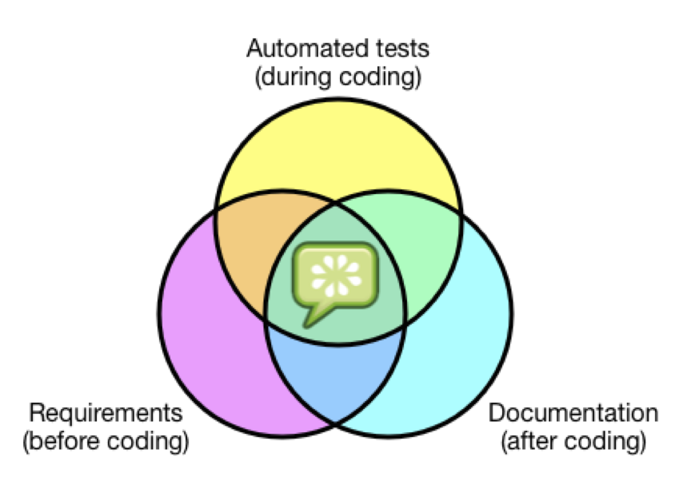

Frustration with ambiguous requirements and misunderstandings between the people who order the software and those who deliver it.
Combine automated acceptance tests, functional requirements and software documentation into one format that would be understandable by non-technical people as well as testing tools
JBehave
Concordian
Fitnesse
EasyB
Spock?
Jasmine (for JavaScript)
Cucumber
grails-app/conf/BuildConfig.groovy
dependencies {
groovy 'org.codehaus.groovy:groovy:2.2.2'
testCompile 'junit:junit:4.11'
testCompile 'info.cukes:cucumber-groovy:1.1.5'
testCompile 'info.cukes:cucumber-junit:1.1.5'
}
plugins {
...
test ":cucumber:0.10.0"
...
}
grails-app/conf/CucumberConfig.groovy
cucumber {
tags = ["~@wip"]
features = ["test/cucumber"]
glue = ["test/steps", "test/support"]
formats = [ "html:target/test-reports/cucumber" ]
}
test/cucumber/adding.feature
Feature: Calculate
Scenario: Add two numbers
Given the input "2+2"
When the calculator is run
Then the output should be "4"
Scenario: Subtract two numbers
Given the input "9-4"
When the calculator is run
Then the output should be "5"
test/cucumber/steps/add_steps.groovy
import static cucumber.api.groovy.EN.*
Given(~'^the input "([^"]*)"$') { String input ->
//some groovy code
...
}
When(~'^the calculator is run$') { String input ->
//some groovy code
to CalculatorPage
}
Then(~'^the output should be "([^"]*)"$') { String output ->
//some groovy code
assert ...
}
GORM
Selenium/Geb
test/functional/GebConfig.groovy
import org.openqa.selenium.chrome.ChromeDriver
driver = {
new ChromeDriver()
}
import geb.Browser
Browser.drive {
go "http://myapp.com/login"
assert $("h1").text() == "Please Login"
$("form.login").with {
username = "admin"
password = "password"
login().click()
}
assert $("h1").text() == "Admin Section"
}